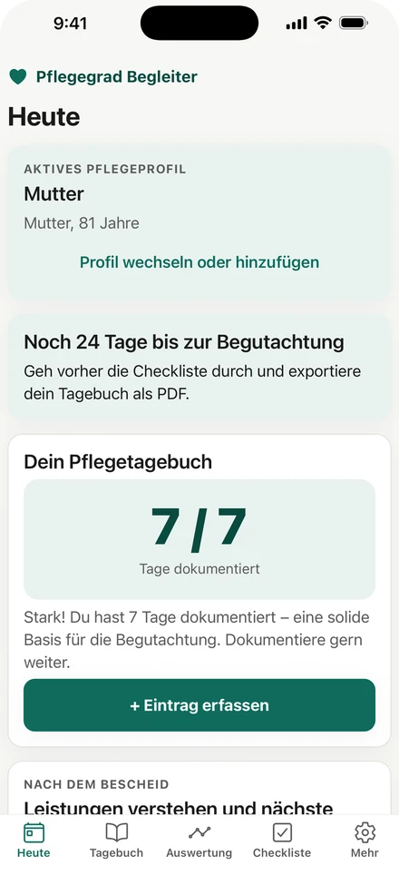
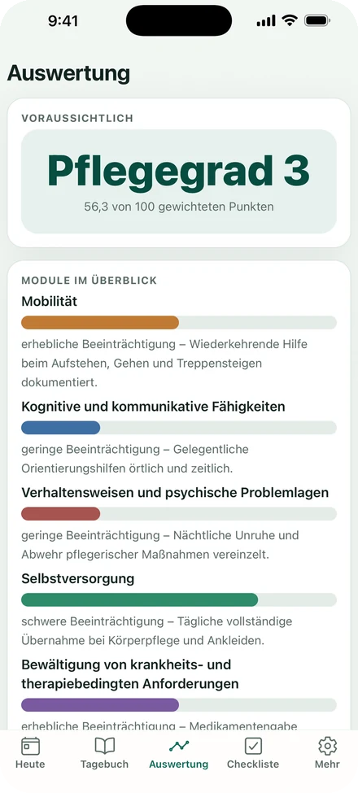
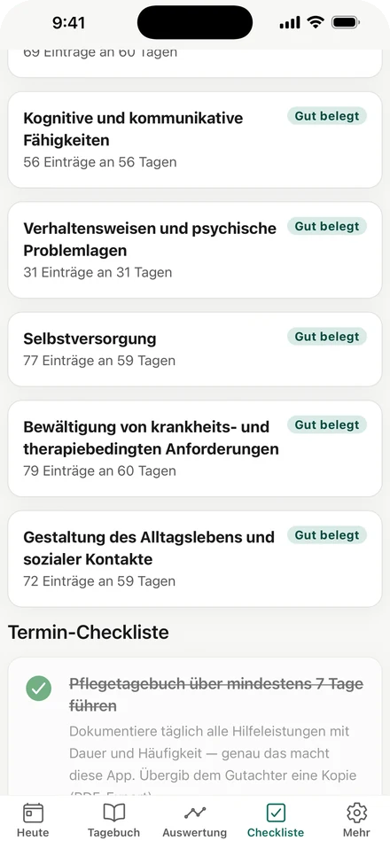
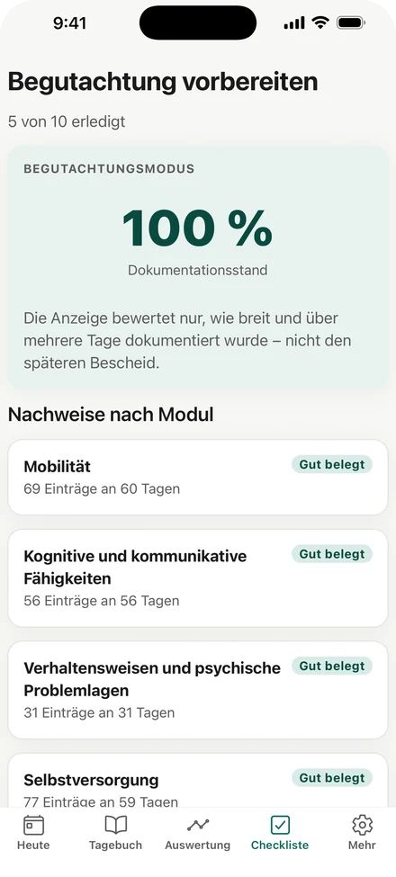

Pflegegrad Begleiter
Die Begutachtung dauert etwa eine Stunde. Bewertet wird darin der Alltag der vergangenen Wochen — meist aus dem Gedächtnis. Diese App hält ihn vorher fest, Tag für Tag, geordnet nach denselben Kriterien, nach denen der Medizinische Dienst fragt.

So arbeitet die App
Jede Situation, die du notierst, landet nicht in einem freien Textfeld, sondern bei dem Einzelkriterium, zu dem sie gehört. Am Ende siehst du, was belegt ist — und wo noch etwas fehlt.

Die sechs Module, gewichtet wie in der Begutachtung — mit dem Punktestand, der sich aus deinen Einträgen ergibt.

„69 Einträge an 60 Tagen“ statt eines Gefühls. Wo die Doku dünn ist, sagt es die App direkt.

Was am Tag der Begutachtung bereitliegen sollte — abgehakt, nicht auswendig gelernt.
Fachliche Grundlage
Die Punktevergabe folgt den amtlichen Anlagen 1 und 2 zu § 15 SGB XI: 64 Einzelkriterien, sechs Module mit ihren gesetzlichen Gewichten, die Höchstwertregel zwischen Modul 2 und 3 und die Punktgrenzen der fünf Pflegegrade.
Modul 2 und Modul 3 teilen sich ihre 15 % — sie werden nicht addiert, es zählt allein der höhere der beiden Werte. Genau daran verrechnen sich selbst gebaute Tabellen am häufigsten, und deshalb summiert diese Liste auf 100 %.
Datenschutz im Klartext
Ehrlich gesagt
Preis
Pflegeprofile, Tagebuch, Auswertung und Checkliste sind im kostenlosen Umfang enthalten. Premium schaltet die KI-Auswertung frei. Preis und Laufzeit stehen im App Store — dort sind sie verbindlich, hier wären sie nur eine Abschrift.
Für iPhone und iPad. Eine Android-Fassung ist in Vorbereitung.